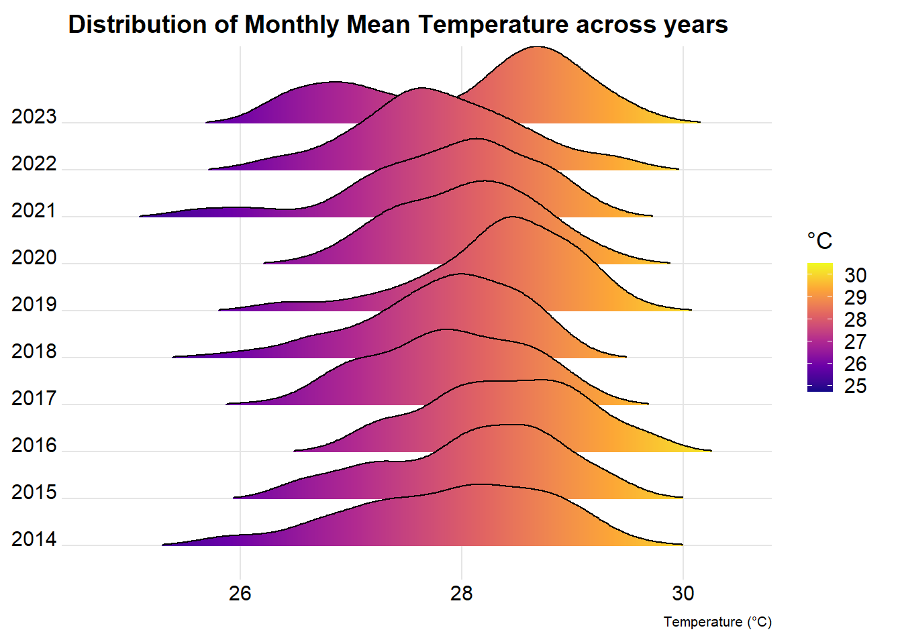
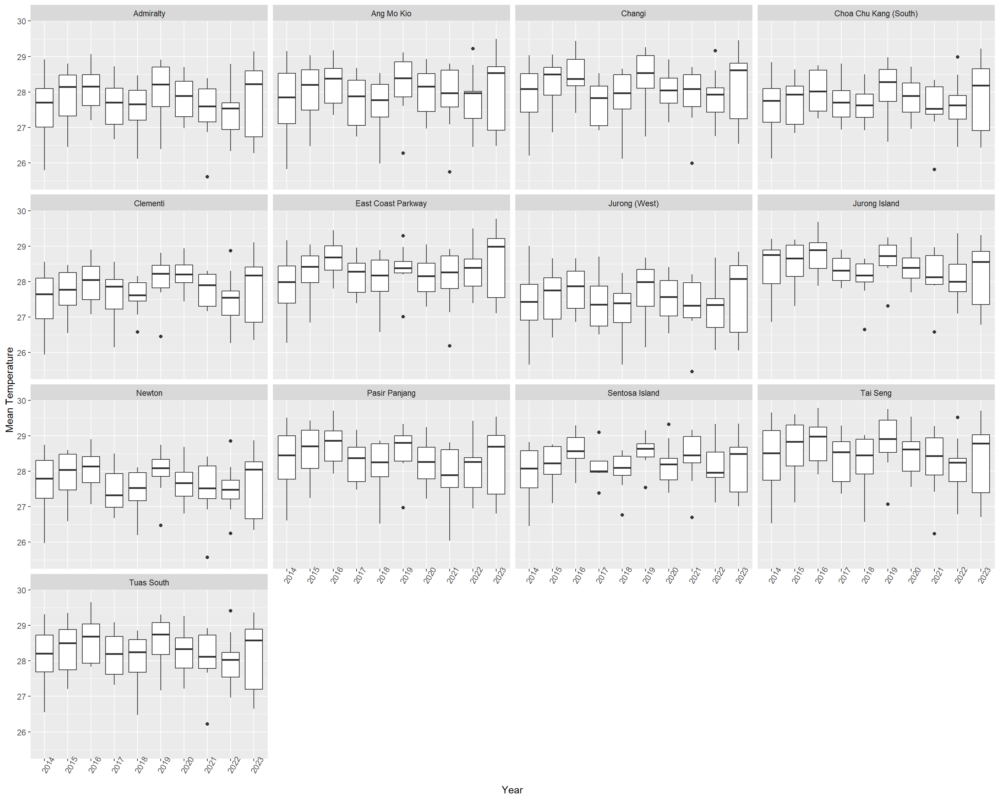
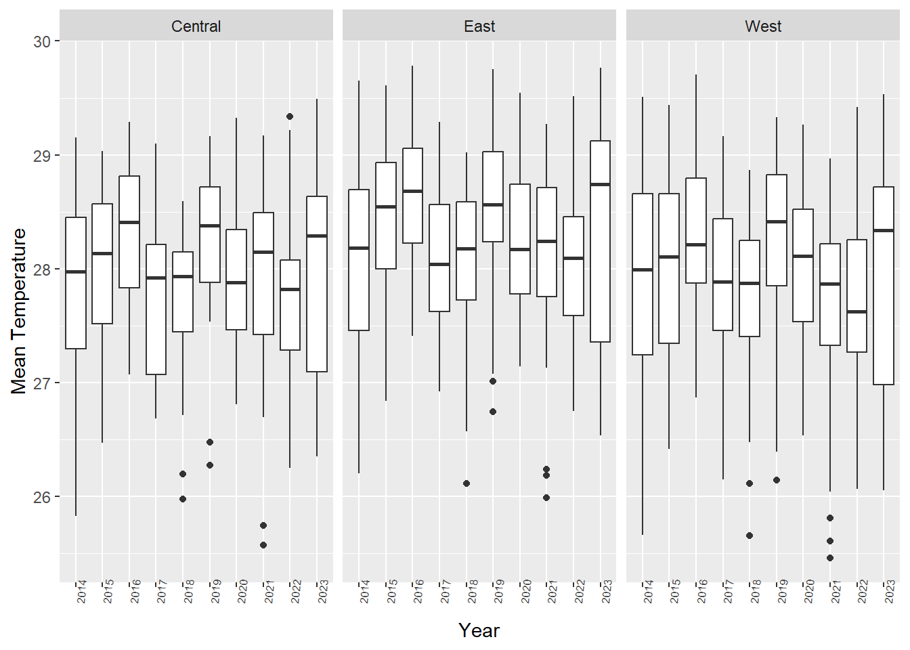

pacman::p_load(dplyr, naniar, kableExtra,
tidyverse, DT, ggplot2, ggridges,
ggdist, ggstatsplot,
plotly, ggiraph,
viridis, gganimate)Take-Home_Ex04: Rain, Hail or Shine: Unveiling Mysteries of the Sky
Working Document for Project Work
1 Overview
In this take home exercise, we will be working towards creating a protoype module as part of the Visual Analytics Project. Specific to this exercise, it will solely comprise the Exploratory Data Analysis (EDA is my part), as the Confirmatory Data Analysis (CDA) and Forecasting are anchored by Simin and Sihui respectively. A draft UI design for R Shiny App will also be prepared as a precursor to the final project dashboard.
2 Data Preparation
2.1 Loading R Packages
The following R packages will be used, as shown in the code chunk below:
2.2 Importing Weather Data
The data sets will be downloaded from historical daily temperature from Meteorological Service Singapore website. The data will focus on rain and temperature (the wind data will excluded as it falls outside the project scope).
The code chunk is as follows:
all_data <- read_csv("data/daily_historical.csv")2.3 Data Wrangling
First, we will find out how the temperature and rainfall data look like using boxplots.
Code
ggplot(all_data,
aes(y= mean_temperature,
x = as.factor(year))) +
facet_wrap(~station) +
geom_boxplot() +
theme(axis.text.x = element_text(angle = 60,
size = 6))Code
ggplot(all_data,
aes(y= daily_rainfall_total,
x = as.factor(year))) +
facet_wrap(~station) +
geom_boxplot() +
theme(axis.text.x = element_text(angle = 60,
size = 6))
Note
From the output above, there are only 13/37 stations that captured temperature data, while only 13/37 stations captured rainfall data from 1980 onwards (with the remaining stations starting from 2009 onwards). For ease of comparison, we will only look at the 13 stations with both temperature and rainfall data, and between a ten-year observation from 2014 to 2023.
We will proceed to drop all those station with missing data, and filter those results from 2014 onwards, using the code chunk below.
Code
filtered_data <- all_data %>%
filter(year >="2014") %>%
drop_na() Let’s examine the boxplots based again.
Code
ggplot(filtered_data,
aes(y= mean_temperature,
x = as.factor(year))) +
facet_wrap(~station) +
geom_boxplot() +
theme(axis.text.x = element_text(angle = 60,
size = 6))Code
ggplot(filtered_data,
aes(y= daily_rainfall_total,
x = as.factor(year))) +
facet_wrap(~station) +
geom_boxplot() +
theme(axis.text.x = element_text(angle = 60,
size = 6))
2.4 Aggregating weather stations by regions

With reference to the map above, we will carve out Singapore into three main regions for easier visualisations subsequently:
West <- South West + North West districts
Central <- Central Singapore district
East <- North East + South East districts
Code
filtered_data <- filtered_data %>%
mutate(region = case_when(
(station == "Clementi" | station == "Tuas South" | station == "Choa Chu Kang (South)" | station == "Jurong (West)" | station == "Jurong Island" | station == "Admiralty" | station == "Pasir Panjang") ~ "West",
(station == "Ang Mo Kio" | station == "Newton" | station == "Sentosa Island") ~ "Central",
(station == "Changi" | station == "East Coast Parkway" | station == "Tai Seng") ~ "East"
))We will now extract the relevant data for temperature and rainfall, and save the data in rds format for faster data wrangling.
Code
filtered_data <- filtered_data %>%
select(station, year, month, day, mean_temperature, maximum_temperature, minimum_temperature, daily_rainfall_total, highest_30_min_rainfall, highest_60_min_rainfall, highest_120_min_rainfall,region)
write_rds(filtered_data, "data/filtered_data.rds")3 Temperature Data EDA
Code
filtered_data <- read_rds("data/filtered_data.rds")Lets have a glimpse of what the data looks like.
Code
glimpse(filtered_data)Rows: 44,856
Columns: 12
$ station <chr> "Admiralty", "Admiralty", "Admiralty", "Admir…
$ year <dbl> 2014, 2014, 2014, 2014, 2014, 2014, 2014, 201…
$ month <dbl> 1, 1, 1, 1, 1, 1, 1, 1, 1, 1, 1, 1, 1, 1, 1, …
$ day <dbl> 1, 2, 3, 4, 5, 6, 7, 8, 9, 10, 11, 12, 13, 14…
$ mean_temperature <dbl> 26.3, 26.9, 26.5, 26.4, 24.6, 25.0, 26.5, 26.…
$ maximum_temperature <dbl> 28.8, 30.7, 29.5, 31.2, 25.3, 27.2, 30.6, 30.…
$ minimum_temperature <dbl> 24.3, 24.6, 24.9, 24.7, 23.6, 23.1, 24.3, 24.…
$ daily_rainfall_total <dbl> 0.0, 0.0, 4.6, 3.8, 3.6, 80.0, 2.0, 0.0, 2.6,…
$ highest_30_min_rainfall <dbl> 0.0, 0.0, 4.4, 3.8, 1.2, 21.8, 2.0, 0.0, 1.4,…
$ highest_60_min_rainfall <dbl> 0.0, 0.0, 4.4, 3.8, 1.6, 26.2, 2.0, 0.0, 2.0,…
$ highest_120_min_rainfall <dbl> 0.0, 0.0, 4.6, 3.8, 2.0, 30.6, 2.0, 0.0, 2.6,…
$ region <chr> "West", "West", "West", "West", "West", "West…3.1 Aggregating the Mean, Min and Max Temperatures by Month
As the data is broken down by days, there will simply be too many data points across the 10 years of data (from 2014 to 2023). Thus, we will aggregate the data by monthly mean temperature, monthly mininum temperature and monthly maximum temperature.
Code
monthly_mean_temp <- aggregate(mean_temperature ~ region + station + year + month, data = filtered_data, FUN = mean)
monthly_min_temp <- aggregate(minimum_temperature ~ region + station +year + month, data = filtered_data, FUN = min)
monthly_max_temp <- aggregate(maximum_temperature ~ region + station + year + month, data = filtered_data, FUN = max)
merged_temp <- monthly_mean_temp %>%
left_join(monthly_max_temp, by = c("region", "station", "year", "month")) %>%
left_join(monthly_min_temp, by = c("region", "station", "year", "month"))
glimpse(merged_temp)Rows: 1,532
Columns: 7
$ region <chr> "West", "Central", "East", "West", "West", "East",…
$ station <chr> "Admiralty", "Ang Mo Kio", "Changi", "Choa Chu Kan…
$ year <dbl> 2014, 2014, 2014, 2014, 2014, 2014, 2014, 2014, 20…
$ month <dbl> 1, 1, 1, 1, 1, 1, 1, 1, 1, 1, 1, 1, 1, 1, 1, 1, 1,…
$ mean_temperature <dbl> 25.79355, 25.82581, 26.20323, 26.12581, 25.93871, …
$ maximum_temperature <dbl> 31.9, 31.8, 31.8, 31.7, 32.0, 31.1, 31.7, 33.0, 32…
$ minimum_temperature <dbl> 22.4, 22.5, 22.4, 22.6, 22.5, 23.4, 22.0, 23.4, 23…3.2 Distributions of Temperature Data
Distribution of mean temperature
Code
ridge_plot <- ggplot(merged_temp, aes(x = mean_temperature, y=factor(year), fill = stat(x))) +
geom_density_ridges_gradient(scale =2,rel_min_height = 0.01, gradient_lwd = 1.) +
scale_y_discrete(name= NULL) +
scale_fill_viridis_c(name = "°C", option = "C") +
labs(title = 'Distribution of Monthly Mean Temperature across years',
x = "Temperature (°C)",
y = "Year") +
theme_ridges(font_size = 13, grid = TRUE) +
theme(plot.title = element_text(size = 14),
plot.subtitle = element_text(size = 10),
axis.title.x = element_text(size = 8),
axis.title.y = element_text(size = 8, angle = 360))
ridge_plot
Here is an animated visualisation of the changes in mean temperatures
Code
ggplot(data = merged_temp,
aes(x = mean_temperature,
y = station,
fill = after_stat(x))) +
geom_density_ridges_gradient(scale = 3,
rel_min_height = 0.01) +
scale_fill_viridis_c(name = "Colour Scale",
option = "C") +
theme_minimal() +
labs(title = "Distribution of Mean Temperatures by Region & Year",
subtitle = "Year: {closest_state}",
y = "Station",
x = "Temperature (°C)") +
theme(legend.position="none",
plot.title = element_text(face = "bold", size = 12),
axis.title.x = element_text(size = 10),
axis.title.y = element_text(hjust=1, angle=0, size = 10),
axis.text = element_text(size = 8),
plot.background = element_rect(fill = "#f5f5f5", color = "#f5f5f5")) +
transition_states(year) +
ease_aes('linear')Distribution of mean temperature
Code
box_plot1 <- ggplot(merged_temp,
aes(y= mean_temperature,
x = as.factor(year))) +
geom_boxplot()+
theme(axis.text.x = element_text(angle = 60)) +
scale_x_discrete(name = "Year") +
scale_y_continuous(name = "Mean Temperature")
box_plot1
Distribution of mean temperature by regions
Code
box_plot_m <- ggplot(merged_temp,
aes(y= mean_temperature,
x = as.factor(year))) +
geom_boxplot()+
facet_wrap(~ region) +
theme(axis.text.x = element_text(angle = 85,
size = 6)) +
scale_x_discrete(name = "Year") +
scale_y_continuous(name = "Mean Temperature")
box_plot_m
Distribution of mean temperature
Code
violin_plot <- plot_ly(data = merged_temp, x = ~year, y = ~mean_temperature, type = 'violin',
split = ~year,
box = list(visible = T),
meanline = list(visible = T)) %>% # Adds a box plot inside the violin for summary statistics
layout(title = list(text = "<b>Distribution of Mean Temperatures Across Years</b>",
font = list(family = "Arial", size = 14),
xanchor = "center", xref = "paper",
yanchor = "middle", yref = "paper"),
yaxis = list(title = list(text = "Temperature (°C)",
font = list(family = "Arial", size = 12)) ),
xaxis = list(title = list(text = "Year",
font = list(family = "Arial", size = 12)) ))
violin_plot4 Rain Data EDA
5 Static Data Visualisation
Note
6 Interactive Data Visualisation
Note
Note